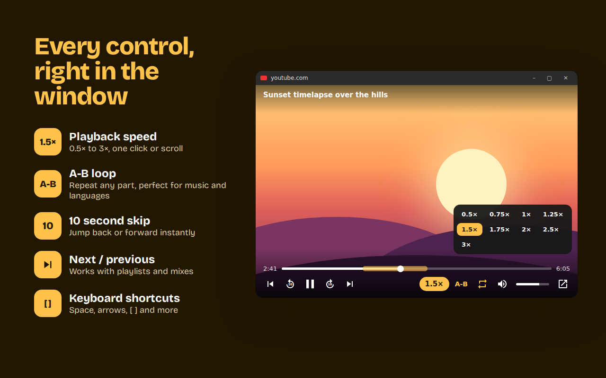

More than picture-in-picture

1.5×
Playback speed
From 0.5× to 3×. Click, scroll on the button or press [ and ].
A-B
A-B loop
Mark a start and an end and repeat that part. Great for music practice and learning languages.
10
10 second skip
Jump back or forward without touching the tab.
⏭
Next and previous
Works with playlists and mixes.
🔊
Volume and loop
A real volume slider, mute and whole-video loop.
52
52 languages
Follows your browser language, or pick one yourself.
How to use
- Install Floaty and open any YouTube video.
- Click the Floaty button in the player's control bar, or press Alt + P.
- Move and resize the floating window anywhere. Close it and the video goes back into the page.
Private by design
Floaty doesn't collect, store or send your personal data. No account, no tracking, no ads. It only runs on youtube.com. Read the privacy policy.